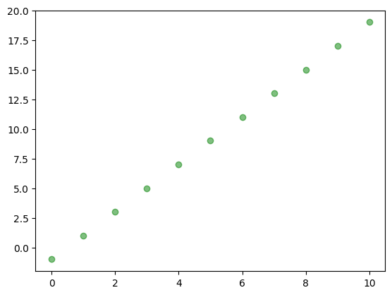
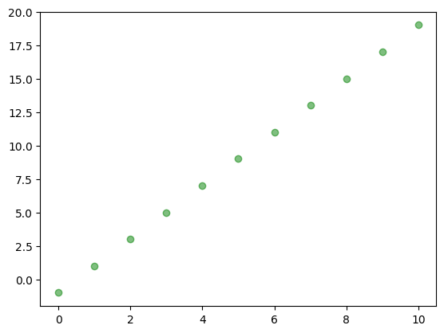
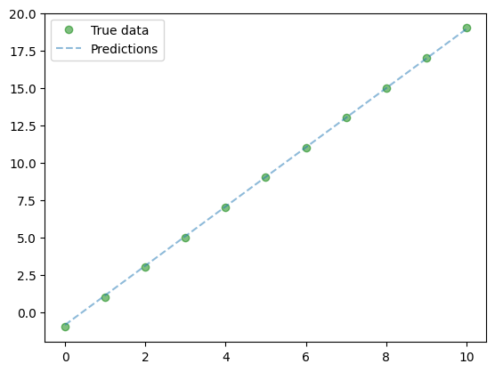
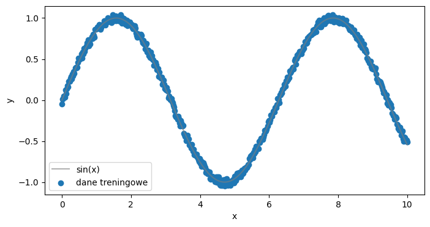
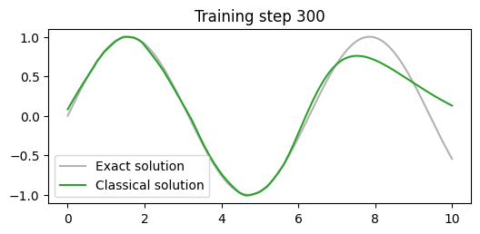
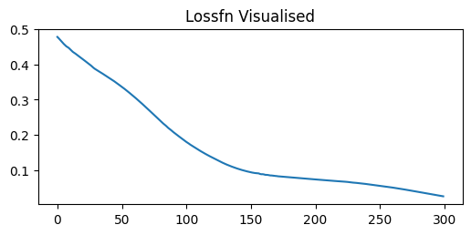
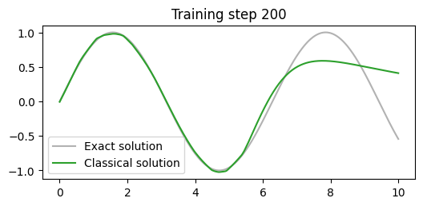
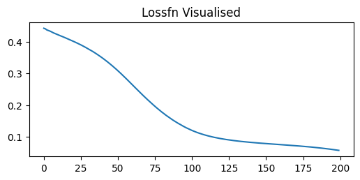

import numpy as np
import matplotlib.pyplot as plt
# zbior danych
x = range(11)
y = [2*xi - 1 for xi in x]
plt.plot(x, y, 'go', label='True data', alpha=0.5)
Do wygenerowania kodów użyjemy biblioteki PyTorch
Wygenerujemy niezaszumione dane na podstawie wzoru \(y = 2 x - 1\). Na podstawie zbioru danych postaramy się oszacować nieznane parametry czyli wyraz przy \(x\) (\(\alpha_1 = 2\)) i wyraz wolny (\(\alpha_0 = -1\)).

Model regresji liniowej dla jednej zmiennej można zrealizować jako prostą jednowarstwową sieć neuronową. Cały proces można zrealizować za pomocą obiektu torch.nn.Linear
(Parameter containing:
tensor([[-0.1154]], requires_grad=True),
Parameter containing:
tensor([0.4927], requires_grad=True))Aby nasze dane mogłybyć przeliczane przez bibliotekę PyTorch musimy je przetworzyć na tensory - czyli obiekty z biblioteki PyTorch.
Uwaga - ponieważ mamy jedną zmienną zawierającą 10 przypadków - potrzebujemy listy składającej się z 10 list jednoelementowych.
Mozna tez wykorzystac obiektowe programowanie.
Możemy utworzyć model i wybrać optymalizator z funkcją kosztu.
Możemy sprawdzić, że nasz model będzie dostrajał 2 parametry.
liczba trenowalnych parametrów: 2Parametry te w początkowej inicjalizacji mają następujące wartości:
weight: tensor([[0.7394]])
bias: tensor([0.1832])epochs = 400
# petla uczaca
for epoch in range(epochs):
lr_model.train() # etap trenowania
y_pred = lr_model(X_train)
loss = criterion(y_pred, y_train)
optimizer.zero_grad()
loss.backward()
optimizer.step()
if (epoch+1) % 50 == 0:
print(f'epoch: {epoch+1:03d}, loss = {loss.item():.4f}')
lr_model.eval() # etap ewaluacji modelu
# po treningu jeszcze raz generujemy predykcje
lr_model.eval()
with torch.no_grad():
predicted = lr_model(X_train)epoch: 050, loss = 0.2946
epoch: 100, loss = 0.1681
epoch: 150, loss = 0.0959
epoch: 200, loss = 0.0547
epoch: 250, loss = 0.0312
epoch: 300, loss = 0.0178
epoch: 350, loss = 0.0101
epoch: 400, loss = 0.0058Mozna tez wykorzystac obiekt dataloader
Epoch 0, loss = 0.0060
Epoch 10, loss = 0.0046
Epoch 20, loss = 0.0000
Epoch 30, loss = 0.0014
Epoch 40, loss = 0.0001Otrzymane parametry po uczeniu
po procesie uczenia waga: Parameter containing:
tensor([[1.9952]], requires_grad=True) oraz bias Parameter containing:
tensor([-0.9755], requires_grad=True)Dopasowanie modelu do danych można przedstawić na wykresie

import torch
import pandas as pd
import matplotlib.pyplot as plt
from IPython.display import clear_output
torch.manual_seed(1234)
# DANE
x = torch.linspace(0,10,500).view(-1,1)
y = torch.sin(x)
y = y + 0.1*(torch.rand(500).view(-1,1)-0.5)
plt.figure(figsize=(8,4))
plt.plot(x, torch.sin(x).view(-1,1), color="tab:grey", alpha=0.6, label="sin(x)")
plt.scatter(x,y, label="dane treningowe")
plt.xlabel('x')
plt.ylabel('y')
plt.legend()
plt.show()
class SinusEstimator(torch.nn.Module):
def __init__(self, N_INPUT: int, N_OUTPUT: int):
super(SinusEstimator,self).__init__()
self.layers = torch.nn.Sequential(
torch.nn.Linear(N_INPUT, 64),
torch.nn.ReLU(),
torch.nn.Linear(64,32),
torch.nn.ReLU(),
torch.nn.Linear(32,16),
torch.nn.Tanh(),
torch.nn.Linear(16,N_OUTPUT)
)
def forward(self, x):
x = self.layers(x)
return x
model = SinusEstimator(1,1)
learning_rate=0.001
optimiser = torch.optim.Adam(model.parameters(), lr=learning_rate)
criterion = torch.nn.MSELoss()
losses = []def callback(model, loss):
losses.append(loss.item())
clear_output(wait=True)
prediction = model(x).detach()
plt.figure(figsize=(6,2.5))
plt.plot(x[:,0].detach(), torch.sin(x)[:,0].detach(), label="Exact solution", color="tab:grey", alpha=0.6)
plt.plot(x[:,0].detach(), prediction[:,0], label="Classical solution", color="tab:green")
plt.title(f"Training step {len(losses)}")
plt.legend()
plt.show()
plt.figure(figsize=(6,2.5))
plt.title('Lossfn Visualised')
plt.plot(losses)
plt.show()


def mse(y, y_pred) -> torch.Tensor:
return torch.mean((y-y_pred)**2)
def special_loss_fn(y, y_pred) -> torch.Tensor:
return mse(y, y_pred) + torch.mean((y_pred - torch.sin(x))**2)
model2 = SinusEstimator(1,1)
learning_rate=0.001
optimiser = torch.optim.Adam(model2.parameters(), lr=learning_rate)
criterion = torch.nn.MSELoss()
losses = []
train(x_train, y, model2, optimiser, 200, special_loss_fn, callback)

W przypadku procesu klasyfikacji danych do numerycznego wyniku musimy dodać funkcję aktywacji - sigmoid \(\sigma\), która pozwoli nam wygenerować prawdopodobieństwo otrzymania klasy 1.
Dane wygenerujemy na podstawie pakietu scikit-learn
Podobnie jak w przypadku regresji liniowej musimy przetworzyć nasze dane do obiektów torch.
model = LogisticRegression(X_train.shape[1], y_train.shape[1])
learningRate = 0.01
criterion = torch.nn.BCELoss()
optimizer = torch.optim.SGD(model.parameters(), lr=learningRate)
# petla uczaca
num_epochs = 500
for epoch in range(num_epochs):
# forward pass and loss
model.train()
y_predicted = model(X_train)
loss = criterion(y_predicted, y_train)
loss.backward()
optimizer.step()
optimizer.zero_grad()
model.eval()
if (epoch+1) % 50 == 0:
print(f'epoch: {epoch+1}, loss = {loss.item():.4f}')
model.eval()
with torch.no_grad():
y_predicted = model(X_train) # no need to call model.forward()
y_predicted_cls = y_predicted.round() # round off to nearest class
acc = y_predicted_cls.eq(y_train).sum() / float(y_train.shape[0]) # accuracy
print(f'accuracy = {acc:.4f}')
print(f"predykcja dla wiersza 0:{y_predicted[0]}, wartosc prawdziwa: {y_train[0]}")epoch: 50, loss = 0.6307
epoch: 100, loss = 0.5104
epoch: 150, loss = 0.4487
epoch: 200, loss = 0.4120
epoch: 250, loss = 0.3878
epoch: 300, loss = 0.3708
epoch: 350, loss = 0.3581
epoch: 400, loss = 0.3484
epoch: 450, loss = 0.3406
epoch: 500, loss = 0.3343
accuracy = 0.8830
predykcja dla wiersza 0:tensor([0.8189]), wartosc prawdziwa: tensor([1.])